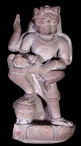

NarasimhaThe fourth incarnation of Vishnu was a beast called Narasimha. Narasimha was half-lion and half-man. 
Vishnu was sent to earth as Narasimha after a demon king declared that worship of the gods was not allowed. He also declared that the people should worship him instead. This demon king had received protection from the god Brahma. He was given the assurance that he could not be killed during the day or night, by man, beast or god, either inside or outside his house. The demon king's son was a devotee of Vishnu, which angered his father. One evening when they were walking around the palace the demon king asked his son whether Vishnu was everywhere, including in one of the pillars set in the doorway. His son replied that Vishnu was in the pillar. The demon king then kicked the pillar saying that he would kill Vishnu. Narasimha burst out of the pillar and killed the demon king. |